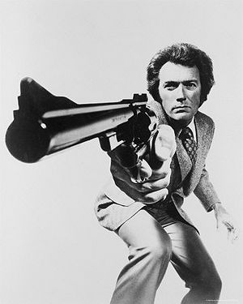
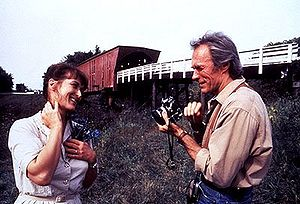

Anexo:Hechos sobre Clint Eastwood
 De: La Frikipedia, la enciclopedia extremadamente seria.
De: La Frikipedia, la enciclopedia extremadamente seria.
 Aquí te dice que eres un ...capuuuuullo
 ¡Cárgate un puente Clint !
- Las torres gemelas cayeron a causa de un redoble pedoso de Clint Eastwood.
- Clint es el Dios del Pedo.
- También del Trueno.
- La mirada de Clint Eastwood puede quemar el fuego
- Es Clint quien esconde la ultima gran reserva de Petrolio y Gas, ambas se encuentran en su culo
- Cuando Clint dice "Pamplona" con la boca llena y no le saltan papuchis
- Clint Eastwood atropeya los coches
- El Dragon Khan se subió en Clint Eastwood, se mareó y potó
- Clint Eastwood no se va de vacaciones, las vacaciones se van de Clint Eastwood
- Si a las doce de la noche, te pones enfrente de un espejo y pronuncias tres veces el nombre de Clint Eastwood, habrás hecho el tonto.
- A Clint Eastwood le suman 20 puntos a su carnet de conducir por cada infracción que hace.
- A su padre le dió por el culo al mismo tiempo que se follaba a su madre para que no se sintiera molesto
- La mano del mayordomo que sale en Scary Movie 2 es fruto de la brutal deformación que sufrió ésta al tocar a Clint Eastwood
- Clint Eastwood tenia su propio grupo de música : Clink 182
- Clint tambien criaba hipopotamos que tenía en su pecera
- En la pecera también cultivaba campos de trigo
- Clint puede caminar sobre el agua sin mojarse y también puede andar por encima de ésta sin hacerlo explicitamente por encima, Clint puede caminar por encima del agua haciéndolo por debajo de esta y sin mojarse
- Clint Eastwood no atraviesa xD los océanos a velocidad de nudos, sino que lo hace a decámetros por instante
- La vida muere en un area de 2 km cuadrados a la redonda cerca de Clint Eastwood
- Si Clint Eastwood tuviera sangre, ésta seria una mezcla entre el más potente ácido sulfúrico y whiskey catalán
- Clint se cargó a Lorna, presunta iniciadora del Reggeaton en España, pero la mierda como ya se sabe se reproduce y fermenta hacia infinito, por eso seguimos escuchando cada vez más y más reggetón todos los días.
- El día de su bautizo, Clint le pegó un moco al cura en la frente
- A las dos semanas volvió y se bebió todo el agua bendita para purificarla
- Clint entiende la putrefacción como la purificación
- Clint Eastwood caga de pie
- Clint Eastwood dejo así a E.T
- Cuando Clint Eastwood mea, el nivel del mar sube y los casquetes polares se tiñen de amarillo
- Clint Eastwood es capaz de pasarse el Devil May Cry en una tragaperras sin meter monedas.
- Hay una mision secreta en el Devil May Cry, en la que debes encontrar una razón para que Clint no te elimine, pero no la hay, luego el juego dice game over
- Clint Eastwood mosquea las moscas
- Clint Eastwood pica a los mosquitos
- Clint Eastwood no se masturba, es la masturbación quien se Clint Eastwood
- El ejercicio se pone en forma haciendo Clint Eastwood
- Clint Eastwood cruzó un camello con un orangután de su pecera y creó a Rosendo
- Clint Eastwood no piensa, es el pensamiento quien Clint Eastwood.
- Clint Eastwood es capaz de ordeñar una vaca solo con mirarla.
- Clint Eastwood persigue a los toros en la corrida de "San Eastwood".
- No hay betún suficiente para oscurecer el pelo, ni lija tan potente como para suavizar todas las arrugas de Clint Eastwood.
- Clint Eastwood ha bebido más cerveza, ha meado más sangre, ha echado más polvos y ha chafado más huevos que todos vosotros juntos, capullos.
- Increíblemente, Chuck Norris no se ha molestado en desmentir lo anterior
- Lo de devolver la vista al ciego se le atribuye a Jesús, pero fue cosa de Clint Eastwood. Y no fue ningún milagro; Clint le ordenó que viese y no le quedaron más cojones que hacerlo.
- Morir es una fase intermedia del enfrentamiento con Clint Eastwood.
- El Corazón de Clint Eastwood no late; estalla periódicamente. De hecho, si acercas tu oreja a su pecho, morirás como consecuencia de la onda expansiva.
- Clint Eastwood no pide las cosas por favor, las exije
- Clint Eastwood se hace las pajas a dos manos.
- Clint Eastwood se hizo pajas a puñetazos, a balazos e incluso a cabezazos.
- Cuando tú naciste, Clint Eastwood ya se había follado a medio condado, incluyendo a tu madre, a tu hermana, y a tu
jodida abuela.
- Clint Eastwood afila los cuchillos usando su glande.
- Clint Eastwood fabrica simpáticas muñecas con los cadáveres de sus enemigos, para luego venderlas en la feria del condado.
- Con bastante frecuencia Clint Eastwood mastica sus propios dientes.
- Clint Eastwood desayuna un banco de peces, come una manada de búfalos, y cena un enjambre de abejas.
- Con bastante frecuencia Clint Eastwood masca sus propios dientes.
- Clint Eastwood no conoce el dolor, sin embargo es su mejor cliente.
- Clint Eastwood siempre deja una bala sin cargar. Quizá tengas suerte y te haga morder el polvo como un hombre.
- Clint Eastwood se come los puros.
- Clint Eastwood entró en un rancho, y tras fumarse todo el tabaco, beberse todo el alcohol y follarse a todas las mujeres dijo: que te follen, jodido hijo de puta. Después se subió a su Harley, y volvió a casa mientras mascaba un puro.
- Clint Eastwood enseñó a su caballo a jugar al póquer. Lo dejó sin un duro y le prestó dinero; el caballo nunca se lo devolvió; el caballo mordió el polvo. Ahora Clint Eastwood tiene una harley.
- Clint Eastwood enseñó a su Harley a jugar al póquer.
- Clint Eastwood puede practicar el sexo haciendo uso únicamente de su Mágnum.
- Clint Eastwood es el único domador conocido de hiporontes
Frases
«"Sé lo que estas pensando, te preguntas si he disparado seis o sólo 5 veces, pero teniendo en cuneta que este es un Magnun del 45, el mejor revólver del mundo, capaz de atravesarte de un disparo, ¿no deberías sentirte afortunado?".»
~ Clint Eastwood (Harry el sucio)
«"Alégrame el día".»
~ Clint, a punto de pegarte un tiro
«"Este es un Magnum 44, el revólver mas potente del mundo capaz de volarle la cabeza. ¿Le hace feliz?".»
~ Clint, enseñándote su " pistola "
«Nos han hecho una hijoputada»
~ Clint Eastwood , creando una nueva jerga
«"Estoy aquí para comunicaros que la vida, tal y como la habéis conocido, ha terminado. Más vale que os vayáis al pueblo esta noche a reiros y a hacer el gilipollas o a restregar vuestras pichitas contra vuestras novias, o a meterla en cualquier agujero. Pero sea lo que sea hacerlo, porque mañana a las seis de la mañana, vuestros culos serán míos."»
~ Gracias dios, por que este tío no fuera mi sargento de instrucción
«"El mundo se divide en dos: los que encañonan y los que cavan. El revólver lo tengo yo, así que ya puedes coger la pala".»
~ Clint Eastwood (El bueno, el malo y el feo y el que tiene la pistola
«He matado a hombres. He matado mujeres y niños. He matado todo tipo de seres vivientes. Y hoy he venido a matarte a ti".»
~ Clint Eastwood , dejándolo claro
«"Ahora voy a salir, si veo a algún cabrón ahí fuera, le mataré, y si a algún cabrón se le ocurre dispararme, no solo le mataré a él, sino que mataré a su mujer, a todos sus amigos, y quemaré su maldita casa, ¿Me habéis oído?... y como alguno de vosotros vuelva a maltratar a otra puta, volveré aquí y os mataré a todos, malditos hijos de perra".»
~ Clint siendo persuasivo
«Martin!, maldito Italiano cabrón bastardo inmigrante de los cojones y de las mil malas hostias gilipollas, estupido hijo de perra»
~ Clint Eastwood Apunto de hacerse un corte de cabello (Gran Torino)
«"Fuera de mi césped".»
~ Clint Eastwood Gran Torino
Otros hechos
Autor(es):
- Frikiman
- Plasnisk
- ArreKarallo
- Alven94
- Juankashi
- Alambiquenuclear
- Enrico Maxwell
- Marcosantinos
- Ricardoxxxlo
- Gñapero Solitario
Frikipedia 2005-2016, Licencia
GFDL 1.2 - Extraído por FrikiLeaks